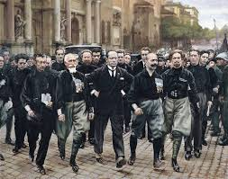
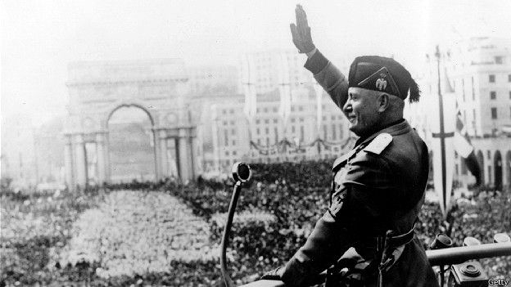
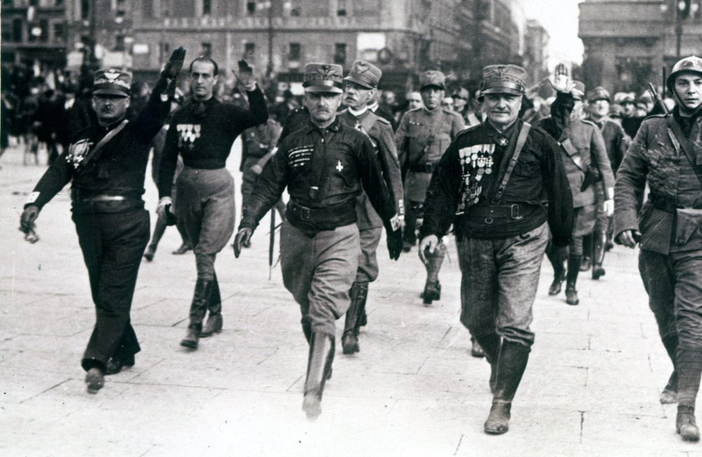
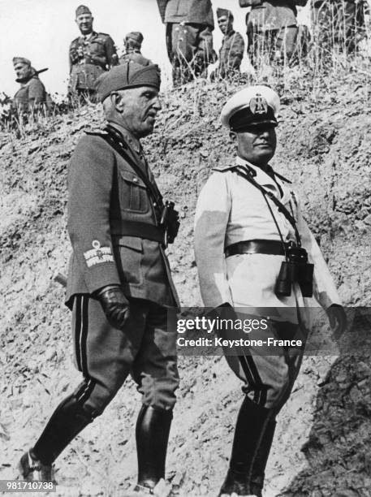
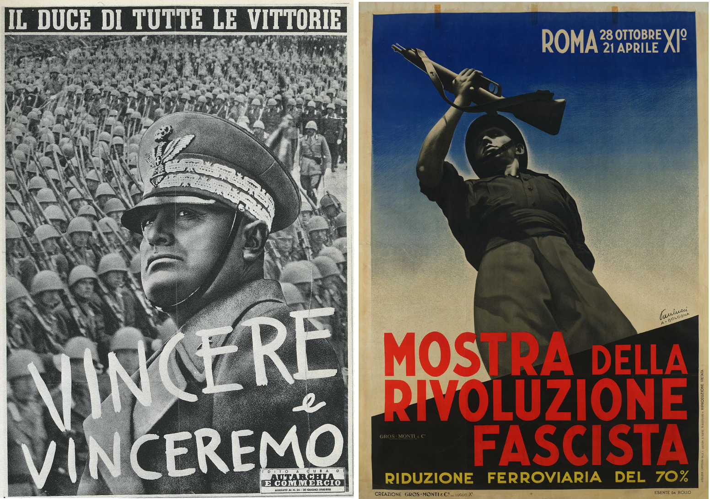

La llegada de Benito Mussolini al poder en Italia se consolidó el 31 de octubre de 1922 , marcando el inicio del régimen fascista y el primer Estado totalitario de derechas en Europa. Este evento, conocido como la Marcha sobre Roma , transformó la política italiana y tuvo una profunda influencia en el ascenso de movimientos autoritarios en otras partes del continente.
Contexto Histórico: Italia en la posguerra
Tras el fin de la Primera Guerra Mundial, Italia enfrentaba un escenario de profunda crisis y descontento:
"Victoria Mutilada": A pesar de ser una de las potencias vencedoras, Italia no obtuvo las compensaciones territoriales que esperaba del Tratado de Versalles, lo que generó un fuerte sentimiento de frustración y nacionalismo herido.
Crisis Económica y Social: La guerra dejó al país con una elevada deuda, alta inflación y un desempleo masivo. Las huelgas obreras, la ocupación de fábricas y las agitaciones campesinas eran constantes, creando un clima de inestabilidad social.
Inestabilidad Política: Los gobiernos parlamentarios eran débiles e ineficaces, incapaces de solucionar los problemas del país. La fragmentación política y la falta de una mayoría sólida llevaron a constantes cambios de gabinete.
Miedo al Comunismo: El éxito de la Revolución Rusa y el auge de los movimientos socialistas y comunistas en Italia generaron un gran temor en las clases medias, los terratenientes y la burguesía, que veían en el fascismo una barrera contra la revolución proletaria.
El ascenso del Fascismo
En este contexto, Benito Mussolini , un ex-socialista que había evolucionado hacia el nacionalismo extremo, fundó los Fasci Italiani di Combattimento en 1919, que en 1921 se transformarían en el Partido Nacional Fascista (PNF) . El movimiento fascista se caracterizaba por:
Violencia política: Sus "camisas negras" (escuadras de acción) reprimían violentamente las huelgas y atacaban a socialistas, comunistas y sindicalistas, actuando con la aquiescencia de las autoridades y el apoyo de sectores conservadores.
Nacionalismo exacerbado: Prometían restaurar la grandeza de Italia, inspirándose en el Imperio Romano.
Discurso antiparlamentario y anticomunista: Presentaban al sistema democrático como corrupto e ineficaz, y se posicionaban como la única fuerza capaz de frenar la "amenaza roja".
Culto al líder: Mussolini, conocido como el "Duce" (líder), cultivó una imagen de hombre fuerte y decidido, el único capaz de llevar a Italia a la prosperidad.
La Marcha sobre Roma (Octubre de 1922)
Aunque el Partido Fascista tenía poca representación parlamentaria, su fuerza residía en sus milicias y en el creciente apoyo de la élite conservadora, que los veía como un mal menor ante el caos social.
El 27 de octubre de 1922 , Mussolini, que se encontraba en Milán, ordenó a miles de "camisas negras" marchar sobre Roma para forzar la renuncia del gobierno. El Primer Ministro, Luigi Facta, pidió al rey Víctor Manuel III que declarara el estado de sitio para detener a los fascistas. Sin embargo, el rey, temiendo una guerra civil y presionado por sectores militares y conservadores, se negó.
En lugar de resistir, el 29 de octubre de 1922 , Víctor Manuel III encargó a Mussolini la formación de un nuevo gobierno. El 31 de octubre , Mussolini llegó a Roma y fue nombrado Primer Ministro, encabezando un gabinete de coalición que incluía a fascistas y a representantes de otros partidos.
Consolidación del Poder y Establecimiento de la Dictadura
Una vez en el poder, Mussolini procedió a desmantelar gradualmente la democracia y establecer la dictadura fascista:
Ley Acerbo (1923): Una ley electoral que garantizaba dos tercios de los escaños al partido más votado (en este caso, el fascista), lo que aseguró su control parlamentario.
Asesinato de Giacomo Matteotti (1924): El asesinato del diputado socialista que denunciaba los fraudes electorales y la violencia fascista, si bien provocó una crisis, fue superado por Mussolini, quien asumió la responsabilidad política del crimen.
Leyes "Fascistísimas" (1925-1926): Se eliminaron los partidos políticos, se suprimió la libertad de prensa, se disolvieron los sindicatos independientes y se creó una policía secreta (OVRA). Mussolini asumió plenos poderes.
Pactos de Letrán (1929): Acuerdos con la Santa Sede que crearon el Estado de la Ciudad del Vaticano y normalizaron las relaciones entre la Iglesia y el Estado italiano, otorgando al régimen un importante apoyo católico.
Legado
La llegada de Mussolini al poder fue un evento trascendental que no solo cambió la historia de Italia, sino que también sirvió de inspiración para otros movimientos totalitarios, incluido el nazismo en Alemania. El fascismo italiano estableció un modelo de Estado autoritario, nacionalista y corporativista que marcaría el período de entreguerras y el estallido de la Segunda Guerra Mundial.
Galería de Imágenes Históricas





Trivia Histórica sobre la Llegada de Mussolini al Poder